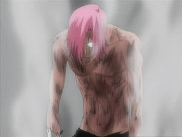

Szyael Aporro Grantz
 De: La Frikipedia, la enciclopedia extremadamente seria.
De: La Frikipedia, la enciclopedia extremadamente seria.
«...eres fantastico...esperaba que vinieras conmigo»
~ Szyael Aporro Grantz insitando a Renji para hacer "cosas"
Szyael Aporro Grantz
Personaje ficticio (menos mal) de bleach, "hombre" de pelo rosa (se rumorea que es primo lejano de Beauty, y tio segundo por parte de madre del amigo de un perro de el vecino de la tia de Sakura Haruno), estilo Colón, gafas, y gusta de hacer poses afeminadas. Es el octavo espada, y un empollón de mierda, con lo que es el científico mas importante de hueco mundo. Es asi como Bill Gates pero sin sus milloncejos. Al ser un Pijo de mucho cuidado, teme a los metaleros.
| De la serie Bleach:
|
| Szyael Aporro Grantz
|
|
|
| Szyael mirándote el culo (si eres un tio)
|
|
| Origen
|
Village people
|
| Raza
|
Arrancar de la otra acera
|
| Reiatsu
|
Osea
|
| Técnica favorita
|
Hace muñequitas con droga en sus ratos libres.
|
| Malo o Bueno
|
Malo, y peligroso si le das la espalda y eres varón.
|
| Objetivo
|
Bum ñaca ñaca ñaca ñaca
|
| Notas
|
Excelentes, si empollaba en casa y todo.
|

|
CUIDADÍNEste artículo o sección contiene alerones feos. O sea
SPOILERS.
|
Hueco mundo
Primero aparece atrapando a Abarai Renji, en una habitación donde este no puede usar su bankai (porque a Szyael ver como una serpiente gigantesca se alarga le produce... imaginad)Y lucha con él, pero sin tomarselo en serio y al final se raya y llama a su fracción, una panda de subnormales tropa de enormes arrancars, para que hagan el trabajo sucio, ya que podría ROMPÉRSELE UNA UÑA(cuidao). Luego llega Ishida, con el mamarracho de Peshe detrás, y ayuda a Renji a luchar contra el espada. Finalmente hacen una Orgía y Szyael queda agotado, por lo que confunde a sus fracciones con bocatas y se los merienda. Y luego se va a ponerse ropa para luego seguir con la lucha. Ishida y Renji deciden escapar pero los muy idiotas se pierden, y acaban en la misma habitación. Szyael vuelve y dice: <<Fornicaré>> y los otros dos preguntan: <<¿Fornicarás?>> y Szyael libera su zanpakutou (lo sé, es MUY malo). Szyael se convierte en un hombre con tentacúlos y los labios pintados. Szyael haciendo la
segunda marcha (Gear Second), de
Luffy y orgías y el lugar explota por sobrepeso. Una vez fuera, a Szyael le da por cojer a Renji y a Ishida y crear muñequitos de ellos, donde dentros hay pastillitas de colores de las cuales si cojes una y la petas coloca una parte de tu cuerpo, así llenandola de droga y acaba por explotar. Empieza a petar organos de los dos gilipollas esos hasta que llega el friki de turno, Mayuri Kurotsuchi, y la buenorra de su hija. Szyael Hace monigotes de ellos dos tambien y empiezan a sufrir hasta que se descubre que solo lo hacían ver, pero en realidad, a esos dos no les afecta la droga en absoluto, puesto que ellos se han metido demasiado droga con Ken, y finalmente Mayuri saca el bankai y se jala al espada. Pero este, antes de ser comido, se mete dentro del cuerpo de Nemu, y le chupa toda la sustancia del cuerpo y renace, con una habilidad llamada Gabriel (mamarrachada de turno). Kurotsuchi lo pica para que use otra habilidad, y como el bankai se comió al cuerpo del espada, el bankai pertenece al espada, pero Mayuri hace que el gusano pete antes de que haga nada. Ahí empiezan los prolemas. Szyael empieza a verlo todo borroso y que va mas lento. En realidad, despues de haberle chupado toda la energía a Nemu desde dentro, también chupó el Alijo de droga de Mayuri, que estaba ahí dentro. Al final, Szyael se pasa centenares de años en su mente por meterse tanta droga sintiendo que una espada le atravesava el corazón. Y si, acabó muerto.
Autor(es):
- Roms
- Khazike Khashondo
- Naruto hyuga
- LordOfCrows
- AlemanH
- Mierdashi
- Maru 2009
- Reports iscariot
Frikipedia 2005-2016, Licencia
GFDL 1.2 - Extraído por FrikiLeaks